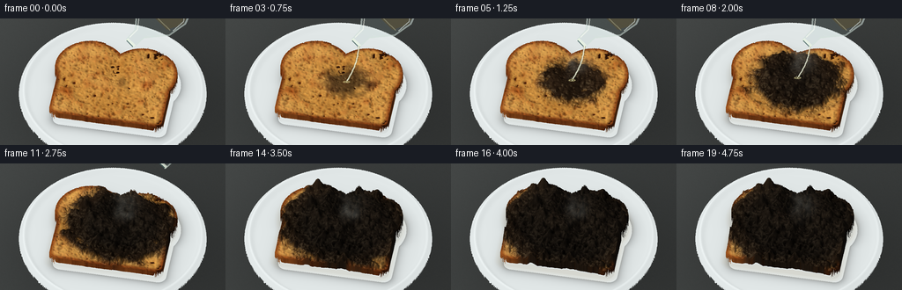
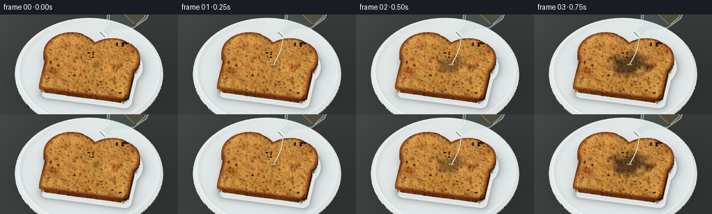

CODING AGENTS AS PIXEL WORLD MODELS
traex/GPT-6.1-Sol · material_0038
点击播放 · 原生 RGB 像素
逐轮保存的候选
回放视频、检查图与代码变化。
每份候选均可单独播放。实际图片检查记录在下方工具轨迹中。
候选 01播放与检查图
点击播放 · 原生 RGB 像素


展开代码变化
--- 上一保存版本
+++ 本次保存版本
@@ -0,0 +1,267 @@
+from pathlib import Path
+import numpy as np
+from PIL import Image, ImageDraw, ImageFilter
+from scipy.ndimage import gaussian_filter, map_coordinates
+import artifact_io
+
+ROOT = Path(__file__).resolve().parent
+W,H,SS=256,144,3
+SW,SH=W*SS,H*SS
+rng=np.random.default_rng(72816)
+N=900
+extent=4.6
+axis=np.linspace(-extent,extent,N,dtype=np.float32)
+x,y=np.meshgrid(axis,axis)
+dx=axis[1]-axis[0]
+
+def noise(sigma):
+ v=gaussian_filter(rng.normal(size=(N,N)).astype(np.float32),sigma)
+ v=v/(v.std()+1e-6)
+ return v
+fine=noise(.7); small=noise(2); med=noise(8); broad=noise(27); large=noise(60)
+# A bread slice: rounded square, with the two soft shoulders of a loaf.
+qx=np.abs(x)-(1.55-.23); qy=np.abs(y+.15)-(1.10-.23)
+box=np.sqrt(np.maximum(qx,0)**2+np.maximum(qy,0)**2)+np.minimum(np.maximum(qx,qy),0)-.23
+lobe1=np.sqrt((x-.70)**2+(y-.54)**2)-.96
+lobe2=np.sqrt((x+.70)**2+(y-.54)**2)-.96
+sdf=np.minimum(box,np.minimum(lobe1,lobe2))
+bread=sdf<0
+radius=np.sqrt(x*x+y*y)
+plate=radius<2.52
+# Stable irregular crumb pores, never regenerated between frames.
+pores=np.zeros((N,N),np.float32)
+craters=np.zeros_like(pores)
+for j in range(740):
+ cx=rng.uniform(-1.60,1.60); cy=rng.uniform(-1.28,1.51)
+ rx=rng.uniform(.014,.052); ry=rx*rng.uniform(.6,1.6)
+ ix=int((cx+extent)/dx); iy=int((cy+extent)/dx)
+ n=int(max(rx,ry)*3.5/dx)+2
+ xa=max(0,ix-n); xb=min(N,ix+n+1); ya=max(0,iy-n); yb=min(N,iy+n+1)
+ r2=((x[ya:yb,xa:xb]-cx)/rx)**2+((y[ya:yb,xa:xb]-cy)/ry)**2
+ p=np.exp(-r2*2)
+ pores[ya:yb,xa:xb]+=p*rng.uniform(.6,1)
+ craters[ya:yb,xa:xb]+=np.exp(-r2)*.014
+pores=np.clip(pores,0,1)
+# Small rounded carbon foam clumps, with visible crater-like pores.
+bubbles=np.zeros_like(pores)
+for j in range(130):
+ cx=rng.uniform(-1.6,1.6); cy=rng.uniform(-1.3,1.5)
+ rr=rng.uniform(.045,.15)
+ ix=int((cx+extent)/dx); iy=int((cy+extent)/dx); n=int(rr*3/dx)+2
+ xa=max(0,ix-n); xb=min(N,ix+n+1); ya=max(0,iy-n); yb=min(N,iy+n+1)
+ r2=((x[ya:yb,xa:xb]-cx)/rr)**2+((y[ya:yb,xa:xb]-cy)/rr)**2
+ bubbles[ya:yb,xa:xb]+=np.exp(-r2*1.6)*rng.uniform(.035,.12)
+
+rot=np.deg2rad(-10)
+c,s=np.cos(rot),np.sin(rot)
+scale=42.3
+py,px=np.mgrid[0:SH,0:SW].astype(np.float32)
+px=(px+.5)/SS; py=(py+.5)/SS
+X0=(px-128)/scale
+Y0=(87-py)/(.75*scale)
+base_x=c*X0+s*Y0
+base_y=-s*X0+c*Y0
+rayx=-s*.88
+rayy=-c*.88
+
+def project(wx,wy,wz):
+ X=c*wx-s*wy; Y=s*wx+c*wy
+ return np.array([128+scale*X,87-scale*(.75*Y+.66*wz)])
+
+def lookup(a,xx,yy,order=1):
+ return map_coordinates(a,[(yy+extent)/dx,(xx+extent)/dx],order=order,mode='nearest',prefilter=False)
+
+# Neutral photographic lab bench, with soft directional illumination.
+bench_noise=rng.normal(0,1,(SH,SW)).astype(np.float32)
+bench_noise=gaussian_filter(bench_noise,.65)
+light=.95-.18*(px/W)+.035*np.cos(py/45)
+bench=np.stack([70*light+bench_noise*1.4,73*light+bench_noise*1.4,72*light+bench_noise*1.4],axis=-1)
+# broad contact shadow outside the porcelain dish
+shadow=np.exp(-((X0-.16)/2.62)**2-((Y0+.12)/2.39)**2)*.25
+bench*=1-shadow[...,None]
+
+
+def render_surface(i):
+ t=i/19
+ progression=np.clip((i-1)/15,0,1)
+ # Radial wetting front, followed by a slightly delayed dehydration front.
+ rr=np.sqrt(((x-.20)/1.15)**2+((y-.17)/1.0)**2)
+ edge=.12+1.72*progression**.66
+ wet=np.clip((edge+.10-rr+.06*med+.025*small)/.16,0,1)
+ char=np.clip((edge-.02-rr+.065*med+.025*small)/.22,0,1)
+ char*=np.clip((i-1)/3,0,1)
+ age=np.clip((edge-rr)/.68,0,1)*np.clip((i-2)/8,0,1)
+ growth=np.clip((i-3)/12,0,1)
+ central=np.exp(-(((x-.20)/1.30)**2+((y-.17)/1.09)**2)*.68)
+ foam=char*growth*(central*(.37+.045*broad+.025*med)+bubbles*1.6)
+ # The carbonized toast becomes raised, fissured and visibly porous.
+ htoast=.38+.015*broad+.007*med+.003*small-craters
+ htoast+=foam-char*growth*(.018*pores+.014*np.maximum(-small-.1,0))
+ hplate=.075+.13*np.exp(-((radius-2.38)/.09)**2)
+ height=np.where(plate,hplate,-.025)
+ height=np.where(bread,htoast,height).astype(np.float32)
+ # Ray march an orthographic 3-D surface, then refine the first intersection.
+ zhi=np.full((SH,SW),1.47,np.float32)
+ hit=np.zeros((SH,SW),bool)
+ zlo=np.zeros_like(zhi)
+ last=1.51
+ for z in np.linspace(1.47,-.06,43):
+ xx=base_x+rayx*z; yy=base_y+rayy*z
+ hh=lookup(height,xx,yy)
+ sel=(~hit)&(z<=hh)
+ zlo[sel]=z; zhi[sel]=last; hit|=sel
+ last=z
+ for k in range(7):
+ zz=(zhi+zlo)*.5
+ hh=lookup(height,base_x+rayx*zz,base_y+rayy*zz)
+ under=zz<=hh
+ zlo=np.where(under,zz,zlo); zhi=np.where(under,zhi,zz)
+ zz=(zhi+zlo)*.5
+ xx=base_x+rayx*zz; yy=base_y+rayy*zz
+ sd=lookup(sdf,xx,yy)
+ bmask=sd<-.001
+ r=np.sqrt(xx*xx+yy*yy)
+ pmask=(r<2.52)&(~bmask)
+ ch=lookup(char,xx,yy); we=lookup(wet,xx,yy); ag=lookup(age,xx,yy)
+ pf=lookup(pores,xx,yy); nf=lookup(fine,xx,yy); ns=lookup(small,xx,yy); nm=lookup(med,xx,yy); nb=lookup(broad,xx,yy)
+ # A natural golden crumb with toasted freckles and a chestnut crust.
+ freckles=np.clip(nm*.20+ns*.10+nb*.13,0,.7)
+ crumb=np.stack([211+9*nb+6*ns-49*pf-42*freckles,
+ 151+10*nb+6*ns-48*pf-66*freckles,
+ 71+8*nb+4*ns-28*pf-40*freckles],axis=-1)
+ crust=np.stack([133+10*nb+6*ns-28*pf,66+7*nb+4*ns-20*pf,24+3*nb+2*ns-8*pf],axis=-1)
+ crustness=np.clip((sd+.145)/.10,0,1)
+ side=(zz<.342)&bmask
+ crustness=np.maximum(crustness,side.astype(float)*.98)
+ raw=crumb*(1-crustness[...,None])+crust*crustness[...,None]
+ raw*=1-.23*we[...,None]*(1-ch[...,None])
+ charcoal=np.stack([24+5*nb+3*ns+1.8*nf-12*pf,
+ 19+4*nb+2.5*ns+1.6*nf-10*pf,
+ 14+3*nb+2*ns+1.4*nf-8*pf],axis=-1)
+ # The youngest portion of the reaction is glossy dark brown rather than gray ash.
+ charcoal+=np.stack([19*(1-ag),10*(1-ag),3*(1-ag)],axis=-1)
+ raw=raw*(1-ch[...,None])+charcoal*ch[...,None]
+ gy,gx=np.gradient(height,dx)
+ nx=-lookup(gx,xx,yy); ny=-lookup(gy,xx,yy); nz=np.ones_like(nx)
+ # Side walls use the actual outward contour normal.
+ sy,sx=np.gradient(sdf,dx)
+ snx=lookup(sx,xx,yy); sny=lookup(sy,xx,yy)
+ nx=np.where(side,snx,nx); ny=np.where(side,sny,ny); nz=np.where(side,.05,nz)
+ norm=np.sqrt(nx*nx+ny*ny+nz*nz)
+ nx/=norm; ny/=norm; nz/=norm
+ diffuse=np.maximum(-.48*nx-.38*ny+.79*nz,0)
+ shade=.44+.65*diffuse
+ raw*=shade[...,None]
+ raw+=np.maximum(0,diffuse-.85)[...,None]*ch[...,None]*13
+ # Wet reflective highlights, little bright curved glints around the pores.
+ specular=(np.maximum(-.26*nx-.48*ny+.84*nz,0)**24)*(we*(1-.75*ag))
+ raw+=specular[...,None]*np.array([40,38,29])
+ # Porcelain bowl and a soft, local bread shadow.
+ pc=np.stack([216+12*diffuse,222+12*diffuse,222+12*diffuse],axis=-1)
+ sdshadow=lookup(sdf,xx-.11,yy+.11)
+ sh=np.exp(-np.maximum(sdshadow,0)*8)*(sdshadow>0)*.27
+ pc*=1-sh[...,None]
+ ring=np.exp(-((r-2.395)/.025)**2)
+ pc+=ring[...,None]*10
+ # Small amber-clear runoff around the slice, not a dramatic pool.
+ puddle=np.clip((.17-sd)/.17,0,1)*(sd>0)*progression
+ pc=pc*(1-puddle[...,None]*.12)+np.array([164,132,73])*puddle[...,None]*.12
+ out=bench.copy()
+ out=np.where(pmask[...,None],pc,out)
+ out=np.where(bmask[...,None],raw,out)
+ return np.clip(out,0,255).astype(np.uint8),height
+
+
+def glass_and_stream(img,i,height):
+ canvas=Image.fromarray(img).convert('RGBA')
+ over=Image.new('RGBA',(SW,SH),(0,0,0,0)); d=ImageDraw.Draw(over)
+ exit=max(i-8,0)
+ mouth=np.array([148.,28.])+np.array([12.,-9.])*exit
+ D=np.array([.70,-.714]); E=np.array([.714,.70])
+ # Narrow-neck clear laboratory flask, tilted to pour.
+ def pt(u,v):
+ return tuple((mouth+u*E+v*D)*SS)
+ outline=[pt(-6,0),pt(-6.5,15),pt(-25,37),pt(-29,59),pt(-26,67),pt(26,67),pt(29,59),pt(25,37),pt(6.5,15),pt(6,0)]
+ if i<=13:
+ d.polygon(outline,fill=(157,185,182,39))
+ # Slight yellow tint of acid behind the glass, diminishing during the pour.
+ liquid=[pt(-20,40),pt(-27,56),pt(-25,65),pt(25,65),pt(28,57),pt(19,40)]
+ d.polygon(liquid,fill=(179,156,79,53 if i<9 else 22))
+ d.line(outline+[outline[0]],fill=(206,222,215,143),width=2*SS,joint='curve')
+ d.line([pt(-5,4),pt(-5,17),pt(-22,39),pt(-25,57)],fill=(244,249,239,172),width=SS)
+ d.line([pt(25,44),pt(26,60),pt(23,64)],fill=(232,242,234,151),width=SS)
+ d.line([pt(-23,42),pt(22,42)],fill=(214,205,151,112),width=SS)
+ # Thick polished glass neck and open elliptical lip.
+ d.line([pt(-6,0),pt(6,0)],fill=(235,245,228,210),width=3*SS)
+ d.line([pt(-5,-1),pt(5,-1)],fill=(71,100,97,190),width=SS)
+ d.line([pt(-6,2),pt(6,2)],fill=(231,242,227,180),width=SS)
+ # White reflected strip on the flask's broad glass body.
+ d.line([pt(-17,37),pt(-22,48),pt(-22,57)],fill=(250,255,247,83),width=2*SS)
+ if 1<=i<=8:
+ wx,wy=.20,.17
+ hz=float(lookup(height,np.array([wx]),np.array([wy]))[0])
+ target=project(wx,wy,hz)
+ start=mouth+E*5
+ q=np.linspace(0,1,90)
+ pts=[]
+ for j,v in enumerate(q):
+ xy=start+(target-start)*v
+ xy[0]+=3*np.sin(v*np.pi)+.14*np.sin(v*40+i)
+ pts.append(tuple(xy*SS))
+ wid=(1.9 if i<7 else 1.2)*SS
+ d.line(pts,fill=(67,70,50,130),width=max(2,int(wid+2)),joint='curve')
+ d.line(pts,fill=(213,216,172,164),width=max(2,int(wid)),joint='curve')
+ d.line([(a-SS*.3,b) for a,b in pts],fill=(245,249,227,216),width=SS,joint='curve')
+ # A thin bright meniscus and a few tiny splashes at impact.
+ ex,ey=target*SS
+ d.ellipse((ex-4*SS,ey-1.1*SS,ex+4*SS,ey+1.1*SS),outline=(226,220,152,148),width=SS)
+ for j in range(5):
+ phase=(i*.33+j*.23)%1
+ a=j*2.13
+ sx=ex+np.cos(a)*(2+5*phase)*SS
+ sy=ey-(np.sin(phase*np.pi)*4+1)*SS
+ rad=.4*SS
+ d.ellipse((sx-rad,sy-rad,sx+rad,sy+rad),fill=(228,232,181,int(135*(1-phase))))
+ return Image.alpha_composite(canvas,over)
+
+# Low-opacity wisps of vapor; rendered volumetrically as noise-modulated puffs.
+smokenoise=rng.normal(size=(SH,SW)).astype(np.float32)
+smokenoise=gaussian_filter(smokenoise,7)
+smokenoise/=smokenoise.std()
+
+def vapor(img,i,height):
+ if i<4:return img
+ arr=np.asarray(img).astype(np.float32).copy()
+ alpha=np.zeros((SH,SW),np.float32)
+ t=i/4
+ strength=.06+.045*np.sin(min((i-4)/12,1)*np.pi)
+ for j in range(9):
+ age=((t*.35+j*.137)%1)
+ wx=.20+.14*np.sin(age*5+j*1.9)+.21*age
+ wy=.17+.10*np.sin(age*3+j)
+ zz=.55+age*1.12
+ p=project(wx,wy,zz)
+ cx,cy=p
+ sx=3.3+age*11; sy=4+age*10
+ g=np.exp(-((px-cx)/sx)**2-((py-cy)/sy)**2)
+ mod=np.clip(.68+.26*np.roll(smokenoise,int(age*18*SS),axis=0),.1,1.3)
+ alpha+=g*mod*strength*(np.sin(age*np.pi)**.7)
+ alpha=np.clip(alpha,0,.21)
+ arr=arr*(1-alpha[...,None])+np.array([209,215,208])*alpha[...,None]
+ return Image.fromarray(np.clip(arr,0,255).astype(np.uint8),'RGBA' if arr.shape[-1]==4 else 'RGB')
+
+
+def main():
+ frames=[]
+ for i in range(20):
+ img,height=render_surface(i)
+ scene=glass_and_stream(img,i,height).convert('RGB')
+ scene=vapor(scene,i,height).convert('RGB')
+ # Downsampling keeps bread pores and glass edges fine and photographic.
+ scene=scene.resize((W,H),Image.Resampling.LANCZOS)
+ frames.append(np.asarray(scene,dtype=np.uint8))
+ print(f'frame {i+1}/20',flush=True)
+ artifact_io.save(np.stack(frames),ROOT)
+ print('Saved 20 RGB frames and player.',flush=True)
+
+if __name__=='__main__':main()
可观测工具轨迹
实际执行的命令与返回图片。
命令 1exit 0
/bin/bash -lc "ls -la && cat prompt.txt && printf '\\n---RULES---\\n' && cat GENERATION_RULES.md && printf '\\n---SPEC---\\n' && cat task_spec.json"
命令 2exit 0
/bin/bash -lc "cat artifact_io.py && python - <<'PY' import importlib.util for m in ['numpy','PIL','scipy']: print(m, bool(importlib.util.find_spec(m))) PY"
命令 3exit 1
/bin/bash -lc "cat > generate.py <<'PY'
from pathlib import Path
import numpy as np
from PIL import Image, ImageDraw, ImageFilter
from scipy.ndimage import gaussian_filter, map_coordinates
import artifact_io
ROOT = Path(__file__).resolve().parent
W,H,SS=256,144,3
SW,SH=W*SS,H*SS
rng=np.random.default_rng(72816)
N=900
extent=4.6
axis=np.linspace(-extent,extent,N,dtype=np.float32)
x,y=np.meshgrid(axis,axis)
dx=axis[1]-axis[0]
def noise(sigma):
v=gaussian_filter(rng.normal(size=(N,N)).astype(np.float32),sigma)
v=v/(v.std()+1e-6)
return v
fine=noise(.7); small=noise(2); med=noise(8); broad=noise(27); large=noise(60)
# A bread slice: rounded square, with the two soft shoulders of a loaf.
qx=np.abs(x)-(1.55-.23); qy=np.abs(y+.15)-(1.10-.23)
box=np.sqrt(np.maximum(qx,0)**2+np.maximum(qy,0)**2)+np.minimum(np.maximum(qx,qy),0)-.23
lobe1=np.sqrt((x-.70)**2+(y-.54)**2)-.96
lobe2=np.sqrt((x+.70)**2+(y-.54)**2)-.96
sdf=np.minimum(box,np.minimum(lobe1,lobe2))
bread=sdf<0
radius=np.sqrt(x*x+y*y)
plate=radius<2.52
# Stable irregular crumb pores, never regenerated between frames.
pores=np.zeros((N,N),np.float32)
craters=np.zeros_like(pores)
for j in range(740):
cx=rng.uniform(-1.60,1.60); cy=rng.uniform(-1.28,1.51)
rx=rng.uniform(.014,.052); ry=rx*rng.uniform(.6,1.6)
ix=int((cx+extent)/dx); iy=int((cy+extent)/dx)
n=int(max(rx,ry)*3.5/dx)+2
xa=max(0,ix-n); xb=min(N,ix+n+1); ya=max(0,iy-n); yb=min(N,iy+n+1)
r2=((x[ya:yb,xa:xb]-cx)/rx)**2+((y[ya:yb,xa:xb]-cy)/ry)**2
p=np.exp(-r2*2)
pores[ya:yb,xa:xb]+=p*rng.uniform(.6,1)
craters[ya:yb,xa:xb]+=np.exp(-r2)*.014
pores=np.clip(pores,0,1)
# Small rounded carbon foam clumps, with visible crater-like pores.
bubbles=np.zeros_like(pores)
for j in range(130):
cx=rng.uniform(-1.6,1.6); cy=rng.uniform(-1.3,1.5)
rr=rng.uniform(.045,.15)
ix=int((cx+extent)/dx); iy=int((cy+extent)/dx); n=int(rr*3/dx)+2
xa=max(0,ix-n); xb=min(N,ix+n+1); ya=max(0,iy-n); yb=min(N,iy+n+1)
r2=((x[ya:yb,xa:xb]-cx)/rr)**2+((y[ya:yb,xa:xb]-cy)/rr)**2
bubbles[ya:yb,xa:xb]+=np.exp(-r2*1.6)*rng.uniform(.035,.12)
rot=np.deg2rad(-10)
c,s=np.cos(rot),np.sin(rot)
scale=42.3
py,px=np.mgrid[0:SH,0:SW].astype(np.float32)
px=(px+.5)/SS; py=(py+.5)/SS
X0=(px-128)/scale
Y0=(87-py)/(.75*scale)
base_x=c*X0+s*Y0
base_y=-s*X0+c*Y0
rayx=-s*.88
rayy=-c*.88
def project(wx,wy,wz):
X=c*wx-s*wy; Y=s*wx+c*wy
return np.array([128+scale*X,87-scale*(.75*Y+.66*wz)])
def lookup(a,xx,yy,order=1):
return map_coordinates(a,[(yy+extent)/dx,(xx+extent)/dx],order=order,mode='nearest',prefilter=False)
# Neutral photographic lab bench, with soft directional illumination.
bench_noise=rng.normal(0,1,(SH,SW)).astype(np.float32)
bench_noise=gaussian_filter(bench_noise,.65)
light=.95-.18*(px/W)+.035*np.cos(py/45)
bench=np.stack([70*light+bench_noise*1.4,73*light+bench_noise*1.4,72*light+bench_noise*1.4],axis=-1)
# broad contact shadow outside the porcelain dish
shadow=np.exp(-((X0-.16)/2.62)**2-((Y0+.12)/2.39)**2)*.25
bench*=1-shadow[...,None]
def render_surface(i):
t=i/19
progression=np.clip((i-1)/15,0,1)
# Radial wetting front, followed by a slightly delayed dehydration front.
rr=np.sqrt(((x-.20)/1.15)**2+((y-.17)/1.0)**2)
edge=.12+1.72*progression**.66
wet=np.clip((edge+.10-rr+.06*med+.025*small)/.16,0,1)
char=np.clip((edge-.02-rr+.065*med+.025*small)/.22,0,1)
char*=np.clip((i-1)/3,0,1)
age=np.clip((edge-rr)/.68,0,1)*np.clip((i-2)/8,0,1)
growth=np.clip((i-3)/12,0,1)
central=np.exp(-(((x-.20)/1.30)**2+((y-.17)/1.09)**2)*.68)
foam=char*growth*(central*(.37+.045*broad+.025*med)+bubbles*1.6)
# The carbonized toast becomes raised, fissured and visibly porous.
htoast=.38+.015*broad+.007*med+.003*small-craters
htoast+=foam-char*growth*(.018*pores+.014*np.maximum(-small-.1,0))
hplate=.075+.13*np.exp(-((radius-2.38)/.09)**2)
height=np.where(plate,hplate,-.025)
height=np.where(bread,htoast,height).astype(np.float32)
# Ray march an orthographic 3-D surface, then refine the first intersection.
zhi=np.full((SH,SW),1.47,np.float32)
hit=np.zeros((SH,SW),bool)
zlo=np.zeros_like(zhi)
last=1.51
for z in np.linspace(1.47,-.06,43):
xx=base_x+rayx*z; yy=base_y+rayy*z
hh=lookup(height,xx,yy)
sel=(~hit)&(z<=hh)
zlo[sel]=z; zhi[sel]=last; hit|=sel
last=z
for k in range(7):
zz=(zhi+zlo)*.5
hh=lookup(height,base_x+rayx*zz,base_y+rayy*zz)
under=zz<=hh
zlo=np.where(under,zz,zlo); zhi=np.where(under,zhi,zz)
zz=(zhi+zlo)*.5
xx=base_x+rayx*zz; yy=base_y+rayy*zz
sd=lookup(sdf,xx,yy)
bmask=sd<-.001
r=np.sqrt(xx*xx+yy*yy)
pmask=(r<2.52)&(~bmask)
ch=lookup(char,xx,yy); we=lookup(wet,xx,yy); ag=lookup(age,xx,yy)
pf=lookup(pores,xx,yy); nf=lookup(fine,xx,yy); ns=lookup(small,xx,yy); nm=lookup(med,xx,yy); nb=lookup(broad,xx,yy)
# A natural golden crumb with toasted freckles and a chestnut crust.
freckles=np.clip(nm*.20+ns*.10+nb*.13,0,.7)
crumb=np.stack([211+9*nb+6*ns-49*pf-42*freckles,
151+10*nb+6*ns-48*pf-66*freckles,
71+8*nb+4*ns-28*pf-40*freckles],axis=-1)
crust=np.stack([133+10*nb+6*ns-28*pf,66+7*nb+4*ns-20*pf,24+3*nb+2*ns-8*pf],axis=-1)
crustness=np.clip((sd+.145)/.10,0,1)
side=(zz<.342)&bmask
crustness=np.maximum(crustness,side.astype(float)*.98)
raw=crumb*(1-crustness[...,None])+crust*crustness[...,None]
raw*=1-.23*we[...,None]*(1-ch[...,None])
charcoal=np.stack([24+5*nb+3*ns+1.8*nf-12*pf,
19+4*nb+2.5*ns+1.6*nf-10*pf,
14+3*nb+2*ns+1.4*nf-8*pf],axis=-1)
# The youngest portion of the reaction is glossy dark brown rather than gray ash.
charcoal+=np.stack([19*(1-ag),10*(1-ag),3*(1-ag)],axis=-1)
raw=raw*(1-ch[...,None])+charcoal*ch[...,None]
gy,gx=np.gradient(height,dx)
nx=-lookup(gx,xx,yy); ny=-lookup(gy,xx,yy); nz=np.ones_like(nx)
# Side walls use the actual outward contour normal.
sy,sx=np.gradient(sdf,dx)
snx=lookup(sx,xx,yy); sny=lookup(sy,xx,yy)
nx=np.where(side,snx,nx); ny=np.where(side,sny,ny); nz=np.where(side,.05,nz)
norm=np.sqrt(nx*nx+ny*ny+nz*nz)
nx/=norm; ny/=norm; nz/=norm
diffuse=np.maximum(-.48*nx-.38*ny+.79*nz,0)
shade=.44+.65*diffuse
raw*=shade[...,None]
raw+=np.maximum(0,diffuse-.85)[...,None]*ch[...,None]*13
# Wet reflective highlights, little bright curved glints around the pores.
specular=(np.maximum(-.26*nx-.48*ny+.84*nz,0)**24)*(we*(1-.75*ag))
raw+=specular[...,None]*np.array([40,38,29])
# Porcelain bowl and a soft, local bread shadow.
pc=np.stack([216+12*diffuse,222+12*diffuse,222+12*diffuse],axis=-1)
sdshadow=lookup(sdf,xx-.11,yy+.11)
sh=np.exp(-np.maximum(sdshadow,0)*8)*(sdshadow>0)*.27
pc*=1-sh[...,None]
ring=np.exp(-((r-2.395)/.025)**2)
pc+=ring[...,None]*10
# Small amber-clear runoff around the slice, not a dramatic pool.
puddle=np.clip((.17-sd)/.17,0,1)*(sd>0)*progression
pc=pc*(1-puddle[...,None]*.12)+np.array([164,132,73])*puddle[...,None]*.12
out=bench.copy()
out=np.where(pmask[...,None],pc,out)
out=np.where(bmask[...,None],raw,out)
return np.clip(out,0,255).astype(np.uint8),height
def glass_and_stream(img,i,height):
canvas=Image.fromarray(img).convert('RGBA')
over=Image.new('RGBA',(SW,SH),(0,0,0,0)); d=ImageDraw.Draw(over)
exit=max(i-8,0)
mouth=np.array([148.,28.])+np.array([12.,-9.])*exit
D=np.array([.70,-.714]); E=np.array([.714,.70])
# Narrow-neck clear laboratory flask, tilted to pour.
def pt(u,v):
return tuple((mouth+u*E+v*D)*SS)
outline=[pt(-6,0),pt(-6.5,15),pt(-25,37),pt(-29,59),pt(-26,67),pt(26,67),pt(29,59),pt(25,37),pt(6.5,15),pt(6,0)]
if i<=13:
d.polygon(outline,fill=(157,185,182,39))
# Slight yellow tint of acid behind the glass, diminishing during the pour.
liquid=[pt(-20,40),pt(-27,56),pt(-25,65),pt(25,65),pt(28,57),pt(19,40)]
d.polygon(liquid,fill=(179,156,79,53 if i<9 else 22))
d.line(outline+[outline[0]],fill=(206,222,215,143),width=2*SS,joint='curve')
d.line([pt(-5,4),pt(-5,17),pt(-22,39),pt(-25,57)],fill=(244,249,239,172),width=SS)
d.line([pt(25,44),pt(26,60),pt(23,64)],fill=(232,242,234,151),width=SS)
d.line([pt(-23,42),pt(22,42)],fill=(214,205,151,112),width=SS)
# Thick polished glass neck and open elliptical lip.
d.line([pt(-6,0),pt(6,0)],fill=(235,245,228,210),width=3*SS)
d.line([pt(-5,-1),pt(5,-1)],fill=(71,100,97,190),width=SS)
d.line([pt(-6,2),pt(6,2)],fill=(231,242,227,180),width=SS)
# White reflected strip on the flask's broad glass body.
d.line([pt(-17,37),pt(-22,48),pt(-22,57)],fill=(250,255,247,83),width=2*SS)
if 1<=i<=8:
wx,wy=.20,.17
hz=float(lookup(height,np.array(wx),np.array(wy)))
target=project(wx,wy,hz)
start=mouth+E*5
q=np.linspace(0,1,90)
pts=[]
for j,v in enumerate(q):
xy=start+(target-start)*v
xy[0]+=3*np.sin(v*np.pi)+.14*np.sin(v*40+i)
pts.append(tuple(xy*SS))
wid=(1.9 if i<7 else 1.2)*SS
d.line(pts,fill=(67,70,50,130),width=max(2,int(wid+2)),joint='curve')
d.line(pts,fill=(213,216,172,164),width=max(2,int(wid)),joint='curve')
d.line([(a-SS*.3,b) for a,b in pts],fill=(245,249,227,216),width=SS,joint='curve')
# A thin bright meniscus and a few tiny splashes at impact.
ex,ey=target*SS
d.ellipse((ex-4*SS,ey-1.1*SS,ex+4*SS,ey+1.1*SS),outline=(226,220,152,148),width=SS)
for j in range(5):
phase=(i*.33+j*.23)%1
a=j*2.13
sx=ex+np.cos(a)*(2+5*phase)*SS
sy=ey-(np.sin(phase*np.pi)*4+1)*SS
rad=.4*SS
d.ellipse((sx-rad,sy-rad,sx+rad,sy+rad),fill=(228,232,181,int(135*(1-phase))))
return Image.alpha_composite(canvas,over)
# Low-opacity wisps of vapor; rendered volumetrically as noise-modulated puffs.
smokenoise=rng.normal(size=(SH,SW)).astype(np.float32)
smokenoise=gaussian_filter(smokenoise,7)
smokenoise/=smokenoise.std()
def vapor(img,i,height):
if i<4:return img
arr=np.asarray(img).astype(np.float32).copy()
alpha=np.zeros((SH,SW),np.float32)
t=i/4
strength=.06+.045*np.sin(min((i-4)/12,1)*np.pi)
for j in range(9):
age=((t*.35+j*.137)%1)
wx=.20+.14*np.sin(age*5+j*1.9)+.21*age
wy=.17+.10*np.sin(age*3+j)
zz=.55+age*1.12
p=project(wx,wy,zz)
cx,cy=p
sx=3.3+age*11; sy=4+age*10
g=np.exp(-((px-cx)/sx)**2-((py-cy)/sy)**2)
mod=np.clip(.68+.26*np.roll(smokenoise,int(age*18*SS),axis=0),.1,1.3)
alpha+=g*mod*strength*(np.sin(age*np.pi)**.7)
alpha=np.clip(alpha,0,.21)
arr=arr*(1-alpha[...,None])+np.array([209,215,208])*alpha[...,None]
return Image.fromarray(np.clip(arr,0,255).astype(np.uint8),'RGBA' if arr.shape[-1]==4 else 'RGB')
def main():
frames=[]
for i in range(20):
img,height=render_surface(i)
scene=glass_and_stream(img,i,height).convert('RGB')
scene=vapor(scene,i,height).convert('RGB')
# Downsampling keeps bread pores and glass edges fine and photographic.
scene=scene.resize((W,H),Image.Resampling.LANCZOS)
frames.append(np.asarray(scene,dtype=np.uint8))
print(f'frame {i+1}/20',flush=True)
artifact_io.save(np.stack(frames),ROOT)
print('Saved 20 RGB frames and player.',flush=True)
if __name__=='__main__':main()
PY
python generate.py"命令 4exit 0
/bin/bash -lc "python - <<'PY'
p='generate.py'
s=open(p).read().replace('float(lookup(height,np.array(wx),np.array(wy)))','float(lookup(height,np.array([wx]),np.array([wy]))[0])')
open(p,'w').write(s)
PY
python generate.py"命令 5exit 0
/bin/bash -lc "python - <<'PY'
from pathlib import Path
import numpy as np
from PIL import Image
p=Path('.')
a=np.load(p/'pixels.npz')['pixels']
files=sorted((p/'frames').glob('*.png'))
assert a.shape==(144,256,20)
assert len(files)==20
assert all(Image.open(f).size==(256,144) and Image.open(f).mode=='RGB' for f in files)
assert (p/'index.html').stat().st_size>0
print('Verified: 20 RGB frames, 256Ã144, 4 fps / 5 seconds.')
for f in ['generate.py','pixels.npz','index.html','inspection.png']:
print(f, (p/f).stat().st_size, 'bytes')
PY"保存候选 1 份；完成命令 5 次；可验证图片返回 0 张。原始 API 响应与完整日志保留在本地。